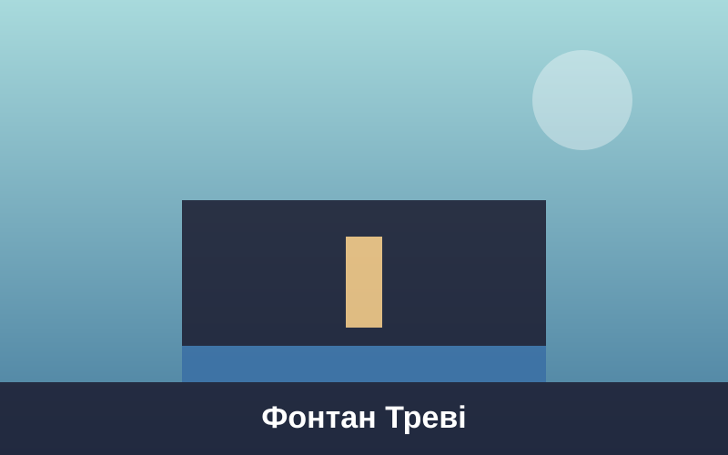
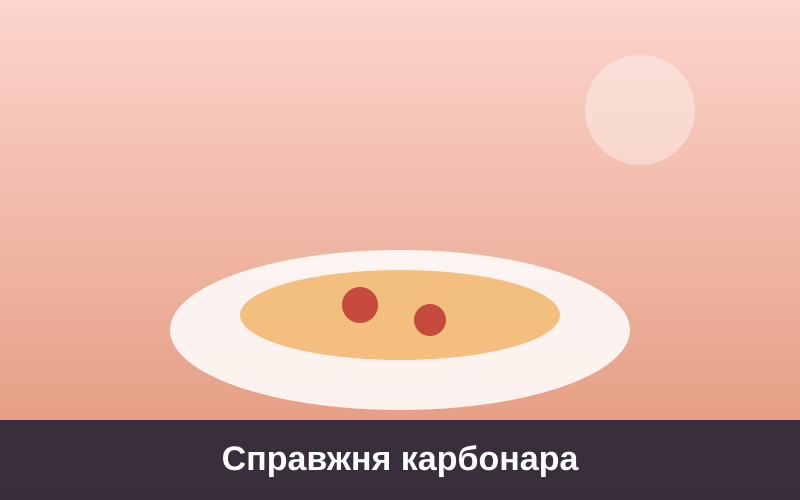

🏛️ Визначні пам’ятки
- Колізей — уявляєш гул арени, стоячи на тих самих каменях.
- Римський форум — серце давньої імперії під відкритим небом.
- Фонтан Треві — кинь монетку, щоб повернутися.
- Ватикан і Сикстинська капела — стеля Мікеланджело перехоплює подих.

🍽️ Кухня та гастрономія
Справжня карбонара без вершків 🍝, піца на тонкому тісті 🍕 та джелато 🍨 тричі на день — ми не жалкуємо ні про що. А ще римляни п’ють еспресо стоячи біля барної стійки — за пів хвилини.

🎭 Культура та традиції
Римляни живуть повільно: обідня сієста, вечірня «паседжата» — прогулянка вулицями — і довгі сімейні вечері. Тут цінують красу в дрібницях: квіти на балконах, старі фрески й гучні суперечки про футбол.
Віртуальна прогулянка мапою
💭 Особисті історії
Ми заблукали в районі Трастевере й потрапили на сімейне свято в маленькій тратторії. Господиня посадила нас за спільний стіл, і до ночі ми їли, сміялися й вчили італійські слова. Рим — це місто, де незнайомці за один вечір стають друзями.